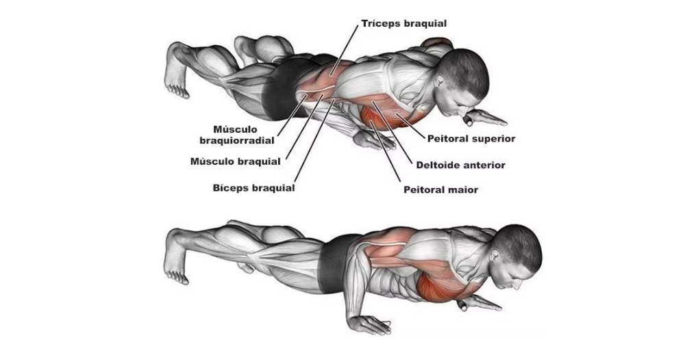
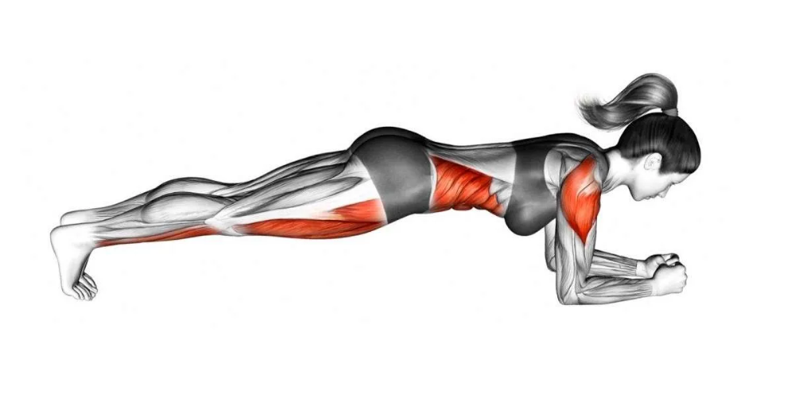
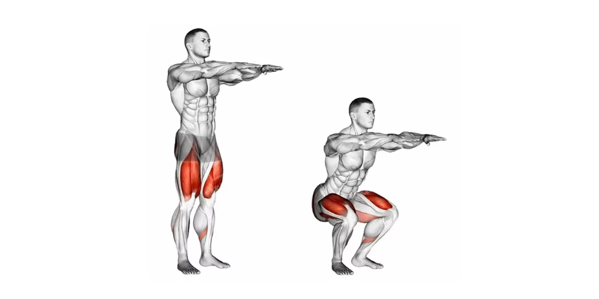
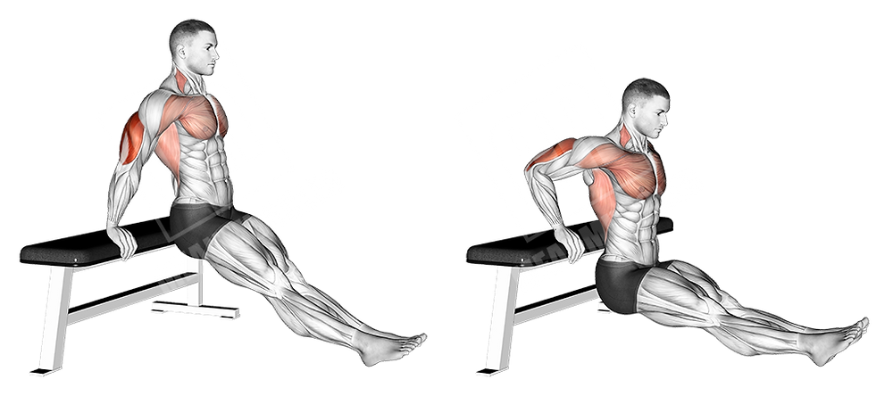
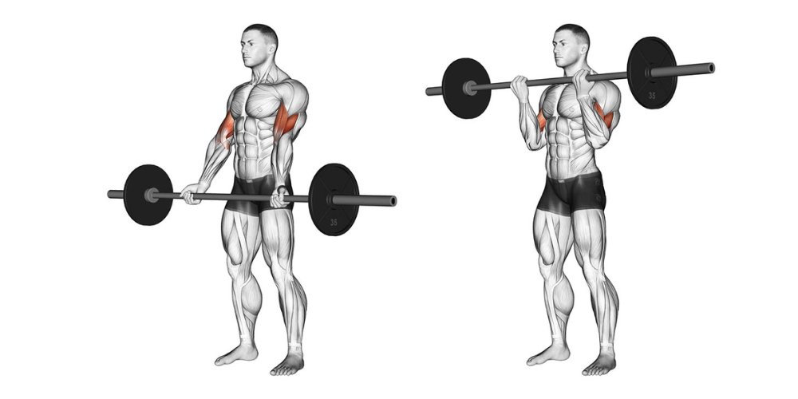

Recommended Exercises
Push-Up

Push-ups are an exercise that works your chest, shoulders, and triceps. To do them, lie down with your hands on the floor in line with your shoulders and your body straight. Bend your elbows, lower your body until your chest almost touches the floor, and then push yourself back up to the starting position. Keep your core engaged to prevent your spine from rounding.
Plank

The plank is an exercise that strengthens the core, shoulders and glutes. To do it, lie face down, rest your forearms on the floor, aligning your shoulders with your elbows. Lift your body, keeping it straight from head to toe. Hold the position, keeping your abs tight and your spine neutral.
Squat

Squats are an exercise that works your legs and glutes. To do them, stand with your feet shoulder-width apart. Bend your knees and lower your hips, as if you were going to sit down in a chair, keeping your back straight. Lower yourself until your knees form a 90-degree angle, then return to the starting position, pushing with your heels.
Triceps bench

The triceps bench exercise primarily works the triceps. To do it, sit on the edge of a bench or chair with your hands resting at your sides. Place your feet on the floor and, with your knees bent, lower your body towards the floor, bending your elbows. Then, push yourself up until your arms are straight. Keep your core tight throughout the movement.
Direct Thread

The biceps curl is an exercise that focuses on strengthening the biceps. To perform it, stand with your feet shoulder-width apart and hold a barbell with your hands supinated (palms facing up). Bend your elbows and lift the bar toward your shoulders, keeping your elbows close to your sides. Slowly lower the bar to the starting position. Keep the movement controlled to maximize muscle gain.